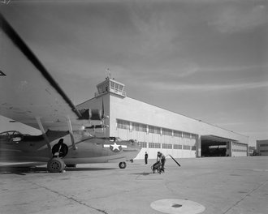
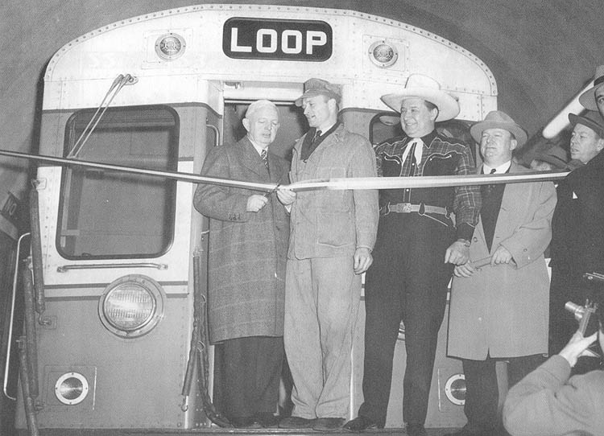
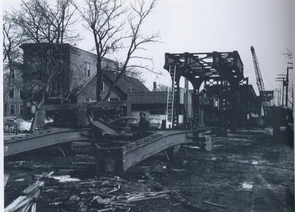
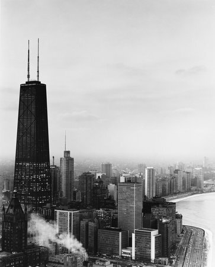
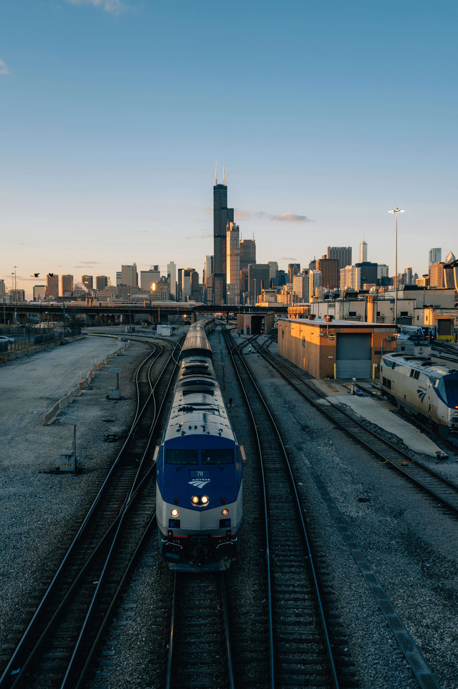

This is Part Three of a three-part series. Read Part One and Part Two.
In the previous article, from 1871–1939, we traced Chicago’s path to the height of its powers. Meatpacking, durable goods, and finance buoyed the city’s economy, and public transit carried millions of people around the city weekly. Already a city of immigrants by 1860, the next fifty years would keep this trend, with hundreds of thousands making their way to the city from Eastern and Southern Europe, in addition to hundreds of thousands of black Americans, all moving to the city in the hope of a better life. The introduction of the automobile, and consequently suburbanization, would create the negative population trend seen in the coming years, and the Great Depression hit the city especially hard, as a consequence of its focus on heavy industry. While no one can say in good faith that Chicago has “collapsed” since the high times of the 1920s, its explosive growth was over, and a minor regression has begun.

Chicago: Beating Heart of Steel (1940–1955)
Ever since the Civil War, Chicago’s industrial base has played pivotal roles in the nation’s war industry. With its transnational rail network, heavy industry focus, and large population of workers, it was steadfast in its role as war materiel giant. In the forties, the country and the war paid the city back for its loyal service, in a way. Despite the New Deal’s best efforts, Chicago and its economy would not recover fully until wartime, which inundated the city with lucrative government contracts (totaling more than $9 billion) for everything from uniforms to tanks to rations, the latter of which the city’s packinghouses were more than eager to fulfill.
The government also injected nearly one billion in funds for new industrial sites, which also sparked new immigration to the city; nearly two hundred thousand black Americans migrated from the south, primarily to Chicago’s South Side, doubling the city’s black population. By 1950, it stood at eight hundred thousand. But this was not growth without consequence; as black people moved in, the city’s white residents ran away to the suburbs while keeping their jobs within the city thanks to the new expressways. The wartime economic boom, which thankfully was sustained after the fighting stopped, provided consumers with surplus money, and military plants with no more military demand turned to civilian auto production, driving down the price of individual car ownership.
While the world of automobiles and highways was being born, the old world of trains and tracks was undergoing a sort of metamorphosis. Inter-city passenger rail would nearly vanish by 1960, practically across the nation, with cars muscling out trains in fulfilling that need. Freight rail would decline too; trucks took over the role of short- and medium-haul freight movement. Practically no new rail was laid country-wide between 1920 and 1960, as demand had been met and companies went bankrupt.

After barely functioning in bankruptcy for twenty years, the Chicago Rapid Transit Company (the merger entity responsible for Chicago’s “L” lines) and its lines had fallen even further into disrepair by 1945, from a combination of swollen wartime transport demand and from lack of maintenance. The State of Illinois approved the creation of the Chicago Transit Authority to take over the RTC’s assets and run them as a municipal corporation, with seven board members; three by the governor and four by the mayor of Chicago. It was funded entirely by the sale of bonds to the public, and would buy out other moribund Chicago private transport entities, like the Chicago Motor Coach Company and the Chicago Milwaukee St. Paul & Pacific Railroad. By 1953, the CTA was responsible for most of the city’s trains, cars, and buses, as well as $201 million in bonded and $121 in un-bonded debt from its predecessors. It immediately began re-organizing the lines under its control; shuttering those going unused and expanding to other regions critically under-served.
Daley’s Renewal Versus Stagnation
Richard J Daley was elected to the office of Chicago Mayor in 1955, and his name was soon synonymous with the city. A creature of the Illinois Democrat Machine, he used his position within it to enact dramatic revitalization efforts and root out its corruption. Known as “Dick the Builder,” he would construct expressways in response to passenger and trucking demand, improve the city’s dramatically substandard housing stock, especially in minority districts, and construct O’Hare airport, soon to be the busiest in the world. The Chicago Area Transportation Study (CATS), conducted in 1955, projected growth trends for the city mirroring or even beating out those of previous decades, it projected a metro population of 9.5 million by 1980, and a city population of 3.7 million by that time, and planned massive expressways to accommodate it.
Although partly due to inaccurate prediction data from the U.S. Census Bureau, and while it would successfully build some of the highways, the CATS was dramatically too optimistic. White Flight meant that, while the metropolitan population would swell from 5.7 in 1950 to 7.5 million by 1980, the city’s population would only decrease, from 3.6 million to 3 million in that same time frame, propped up primarily by more black and minority immigration into the inner city. Manufacturing jobs, for so long the city’s driving force, were leaving too, in a trend repeated across the nation. This included Chicago’s most famous industry: meatpacking. Packers and stockyards alike had been threatening to leave for decades from the unions, and the freedom of trucks and freeways allowed them to pick up shop and move, no longer reliant on the city’s rails for transport. Factors like the substitution of feed lots for ranching, and localized slaughterhouses, caused the Union Stock Yard to close its operations by 1971, ending the figurehead of an industry that had defined the city for one hundred years.

The CTA had quite the challenge ahead of it in these years. Its first hurdle was dealing with a loss of more than 14% of its ridership, as the war’s end meant a five day workweek instead of a six-day one. Now responsible for more than five thousand vehicles servicing more than two thousand miles of routes, it had to manage them and budget for them with only the powers to determine fares, routes, and levels of service. One of its first actions was to combine its streetcars and car fleet into a bus system, to remove the streetcars’ significant maintenance costs and the redundancy of the car fleet. It would also begin downsizing its L lines. The CTA would demolish six branches and an entire line throughout the fifties. These cost-reduction moves were made in order to help the CTA run entirely on fares, but the changes of the seventies would (metaphorically) stack pennies onto the tracks and derail that whole plan.
Chicago Becomes the “Third City”
Chicago was not prepared for the changes of the seventies, and neither was Richard J Daley. Growing increasingly corrupt, and unwilling to adapt to his city’s changing population and needs, he would die in office in 1976, and with him, so seemed to go the city’s veneer of stability and “normalcy,” and it entered the decades of “urban crisis.” Los Angeles officially took the lead in city population in 1982, and was well on its way to surpass it in economic power as well. And its transportation system, so lauded by its citizens and admirers, was teetering towards collapse.
The CTA had been on this doomed course nearly since its inception. Fare revenue, initially intended to be the entity’s only source of revenue, had been in constant decline since its founding. Despite repeated price hikes, the affordability of automobiles and population shift to the suburbs left mass transit in the dust; yearly ridership had collapsed from 1 billion to 400 million despite overall metropolitan growth. It was a vicious cycle: more revenue was needed, so fares were increased, but as fares were increased, fewer people were willing to ride, bringing the institution to near bankruptcy. The legislature’s response was to create the Regional Transit Authority to oversee all manner of transport in Cook, Lake, DuPage, Kane, McHenry, and Will counties. Subsidiaries Metra and Pace were initiated, respectively, to handle the commuter rail and suburban buses. And, in 1983, it was reorganized to be given funding oversight for its three subsidiaries, including applying for tax subsidies and loans, which it would employ in 1989 to expedite the rehabilitation of its systems by taking on over $1 billion in debt.

As the oil shocks of 1973 and 1979 rippled through the nation, Chicago entered a recession with it. While the city had shrunk a little in 1960, from 1970–1990 it saw a loss of eight hundred thousand people, or about eighteen percent of its population. The Great Migration had ended by the mid seventies, and black people actually began leaving the city proper for the suburbs as they climbed the social ladder. With the emigrants went a significant proportion of Chicago’s tax base, which starved its social and government services, and only served to increase its rate of poverty.
Chicago itself was also facing a political crisis during this time, primarily in its budget. Small businesses and the middle class were fleeing the city, depriving it of its tax revenue base. Its public housing stock, already substandard when it was built, was in shambles and in need of practically a complete overhaul. And after the passing of Daley, it went through a tumultuous series of mayors who failed to get much off the ground due to political stagnation and deadlock, until Daley the Younger (Richard M. Daley, son of Richard J. Daley) was elected in 1989. Running the city with a businesslike demeanor, he balanced seven city budgets in a row, primarily through slashing budgets and privatization of social services and bureaucratic jobs. Thanks in part to his leadership, and the economic boom of the late eighties and early nineties, the city would recover by the end of the century, with some problems still left to grapple with.
Arriving at the Station in the New Millennium

For the first time in decades, the city would experience population growth through the nineties, as well as significant metropolitan growth. Its population was helped by a rapid influx of Hispanic immigrants, both internal from the Southwest and external from areas like Mexico and Puerto Rico. Businesses were investing heavily in the digital revolution, which paid great immediate dividends. The CTA experienced its first year in a decade where it was not in budget deficit in 1997, in part due to labor costs saved by the introduction of an automatic ticket collection system and the standardization of “L” trains with only one operator. The Blizzard of 1999 would force the city’s hand; instituting the 2003 CREATE program to rebuild, automate, and improve all lines under the RTA’s authority so that such natural disasters would not paralyze the city again.
Entering the 2000s, the tech boom would halt with the minor recession of 2001, and Chicago’s growth with it. Losing nearly seven percent of its population, the Great Recession of 2008 would only compound the issue, and, like many municipalities, it has yet to truly recover. In a bid to fulfill a budget deficit in 2008, the city sold a seventy-five year lease on its parking meters for $1.18 billion, a number which the investors have already recouped through the revenue.
While long-haul passenger rail is far from its glory days of the turn of the last century, Chicago remains Amtrak’s Midwestern hub, from which it carried nearly 3.4 million passengers in 2011, and Metra runs hundreds of trains daily on nearly five hundred miles of track radiating out from the city center. And long-haul freight has continued, a pillar of the nation’s industrial powers, with Chicago at its heart. Dozens of miles-long trains still snake through the city at any given time.
Wrap-Up
It’s been a long way from the start, hasn’t it? As we approach the city’s 190th, and even its 200th anniversary of incorporation, we will see how its motor-, water-, and especially rail-ways have influenced and will influence its course, and how the city’s development influences them back. Perhaps its long history with trains will encourage the construction of the U.S.’s first high-speed rail line, or even some other kind of innovative transit. Who knows? All I will say is that I’m excited to see where it’s headed, as the future of transportation looks brighter than ever.